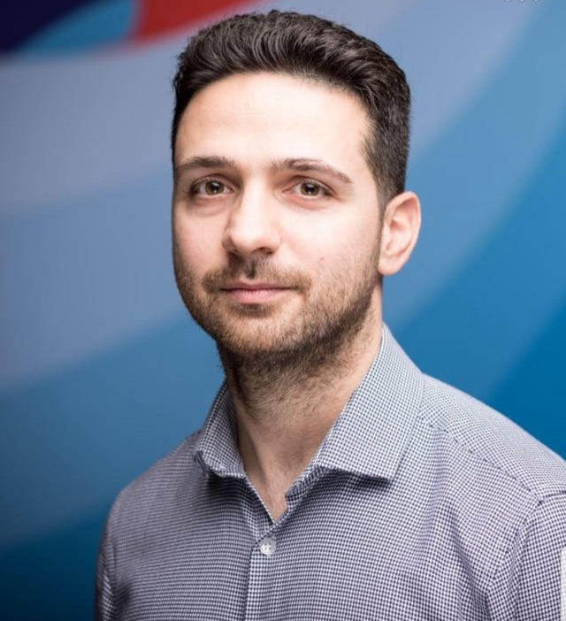

About me
I'm Christos Visvardis, a marketing scientist. For more than 15 years I have worked on one question: what did the marketing actually do? I answer it with marketing mix models, experiments and causal inference, and then help teams move budget based on the answer.
I spent six years in marketing science at Facebook / Meta and TikTok, working with dozens of advertisers, led analytics teams at Cheapflights and MindGeek, and since 2022 I have worked as an independent marketing scientist. Across these roles I have advised on hundreds of millions of dollars of annual ad spend.
Experience
-
2022 - present
Independent marketing scientist
Remote, Cyprus
Advise 10+ high-growth brands and enterprise clients on media allocation. Build Bayesian marketing mix models (Google Meridian, Meta Robyn, PyMC), design geo experiments and conversion lift studies, and combine models, experiments and attribution in one triangulation framework. For a health and wellness app spending tens of millions a year on marketing, this work improved ROI by 20%, saving about $10M a year.
-
2021 - 2022
Marketing Science Partner, Meta
Stockholm
Part of the team that took Robyn, Meta's open-source MMM, from 0 to 1 for Meta's clients. Built measurement plans combining MMM, Brand Lift, Conversion Lift and Geo Lift, introduced new methodologies as tracking and privacy restrictions tightened, and hired, mentored and led team members.
-
2020 - 2021
Product Marketing Manager, Measurement, TikTok
Dubai
Built the Measurement function for MENAT from scratch and hired, mentored and led the team. Owned go-to-market for Brand Lift, Conversion Lift, Attribution and Dynamic Ads, and ran research with Kantar, Ipsos and Nielsen during a period when the region delivered some of TikTok's highest growth rates.
-
2016 - 2019
Marketing Science Partner, Facebook
Dublin
Helped advertisers raise ROI by up to 8x through data analysis, conversion and brand lift tests and marketing strategy, and moved clients from last-touch to data-driven attribution (Shapley value, Markov chain).
-
2014 - 2016
Head of Analytics, Cheapflights (acquired by Kayak)
London
Led an analytics team of 8. Designed and drove data-driven growth and marketing strategy: attribution models, statistical modeling, optimization and A/B testing.
-
2010 - 2014
Head of Analytics, MindGeek
Cyprus
Promoted from Web Analyst to Head of Analytics, leading a team of 6. Implemented tracking and delivered analyses, dashboards, statistical modeling and A/B testing for Marketing and Product teams.
Writing and open source
- Practical Marketing Science (2026): a free field guide to measuring what marketing actually does, from A/B and geo tests to Bayesian MMM, attribution, triangulation, LTV and pricing.
- Blog: tutorials on PyMC-Marketing, Robyn, LightweightMMM, GeoLift, CausalImpact and attribution, plus case studies.
- Portfolio: 14 live apps for MMM, geo experiments, causal impact, budget optimization, forecasting, LTV and pricing.
- GitHub: open-source code for Robyn MMM, GeoLift, cost curves and more.
Education
- MSc in Computer Science, Athens University of Economics and Business. Thesis: Auction Mechanisms in Google AdWords.
- BSc in Management Science and Technology, Athens University of Economics and Business. Thesis: Comparison of Forecasting Methods.
Languages
English (full proficiency), Greek (native), Spanish and Russian (conversational).
Get in touch
The best way to reach me is a message on LinkedIn.